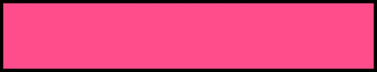

How To Play With Your Husky
You can play with your husky in many different ways like playing tug of war, fetch, and chasing your husky. Here are the 3 simple puppy games!
For the fist game all you will need is a ball. Find your husky, and let her/him know that you wanna play fetch. After that you can throw the ball to your dog or throw the ball some where in your yard.
The second game is to play hide and seek! We know it's not usual to play hide and seek with your dog, but that is another way to play with your husky! As always let your husky know what your playing, you could take turns to be the seeker or hider. I like being the hider so I always let my husky be the seeker.
A third games is tag, you can go to the park for that. It is simple